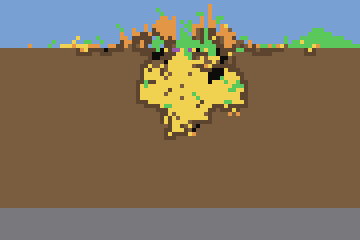
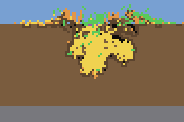
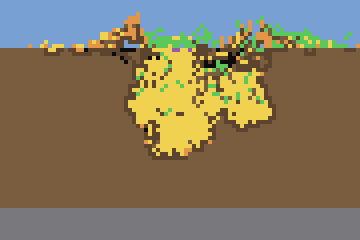
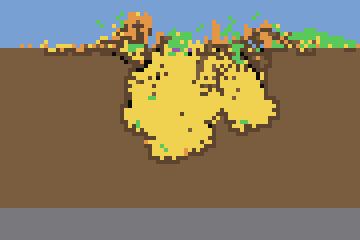
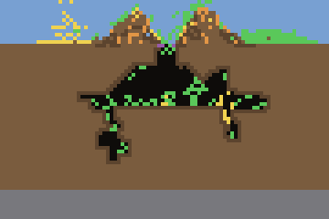
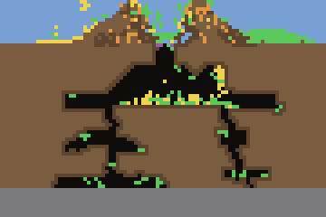
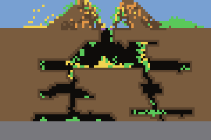
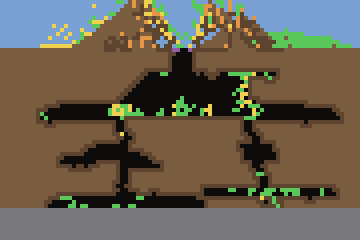

The rooms are lobes of stored food
You asked to see the colony behind the rooms result. The 19 was the batch's median room score, not a count of rooms. This is the batch's best colony on that score, colony 9 of the size-gate arm. It scored 85, higher than the hand-built ant on the same world (36). Its replay shows why: the "rooms" are lobes of a food pile, with about 30 open cells in the whole nest.
Both films are the same garden world (seed 9099, food 25 columns out, 200,000 frames, one frame every 50), replayed exactly: colony 9 reproduces its batch numbers to the cell. The video is the game's own renderer; the strips below it recolour the same nest so stored food stands out.
Trained colony 9, size-gate arm, round 23
128 ants alive · food home 24,725 · starved 7 · nest 470 cells, of which 17 open · crater 6 · room score 85




Hand-built ant, same world
97 ants alive · nest 863 cells, of which 732 open · crater 0 · room score 36




What this changes
The room score reads the shape of the nest with stored food counted as space, so a lumpy food pile scores as several rooms. That is the same blind spot that let the size gate grow food instead of room. Batch 2, running now, scores open room only. The room score needs the same fix before it can be trusted, and I will make that change next.